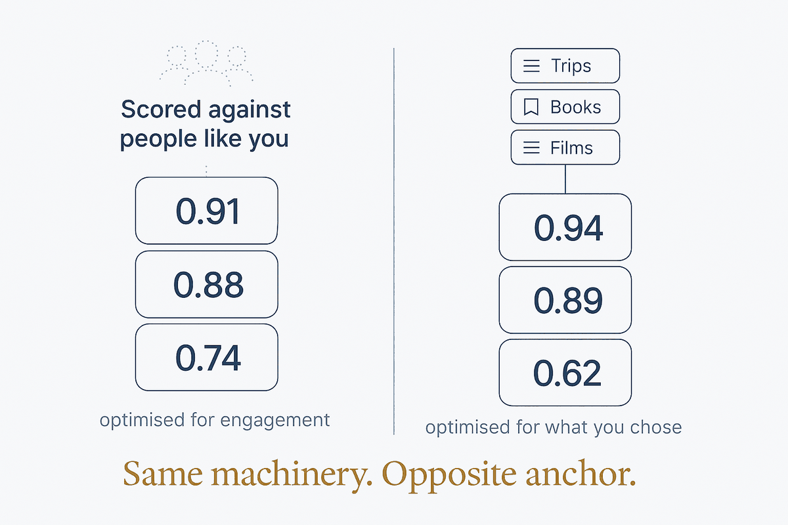

Scoring what's new against what you've already proven you love — the engine that anti-interests puts a veto on.

Scoring what's new against what you've already proven you love — the engine that anti-interests puts a veto on.
Affinity matching answers one question: given everything I already know you like, how close is this new thing? It scores a candidate against a model of your taste built from your own history — the trips you actually took, the books you finished rather than bought, the films you rewatched, the places you returned to.
The mechanism is unremarkable and the anchor is everything. A platform recommender scores against the behaviour of people statistically similar to you, optimising for engagement — time on site, clicks, the next autoplay. An affinity engine scores against your recorded history, optimising for whatever you told it to. Identical machinery, opposite master.
That difference is why this is worth building rather than renting. A recommendation you can interrogate — why did this score 0.89? — is a different object from one you can only accept or dismiss. When the inputs are your own data and the weights are your own choice, "you might also like" stops being a guess about a demographic and becomes an inference about you.
This is the engine; anti-interests is the brake. Neither works alone.
An engine without a brake converges. Score by similarity long enough and the results collapse toward the safe middle of what you already like — the echo chamber, arrived at honestly. A brake without an engine has nothing to stop; a veto list on its own surfaces nothing.
Together they produce the useful shape: broad candidates in, affinity ranks them, the veto kills the plausible-but-unwanted ones outright. The ranking proposes; the veto disposes. A high score is not a defence — that's exactly the case anti-interests exists for.
Affinity matching is only as good as the history behind it, which makes it a consumer of structure rather than a source of it. It needs a modelled self: preferences recorded as data, not vibes. It needs history that distinguishes did from considered. And it needs enough resolution to separate "loved" from "was fine" — a five-star rating on everything teaches it nothing.
This is why it shows up late in a personal system. You cannot score affinity against a pile of unstructured notes. The structure has to exist first, which is the whole argument for building it before you need it.
Related: Anti interests · Curated sources · A modeled self · Via negativa · Derived insight